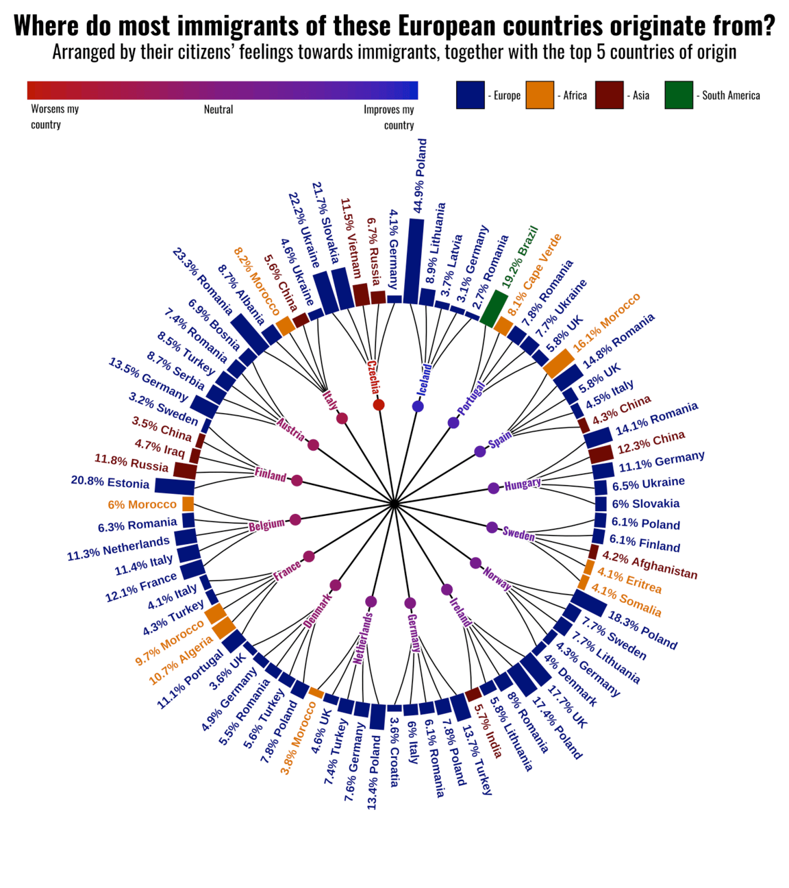
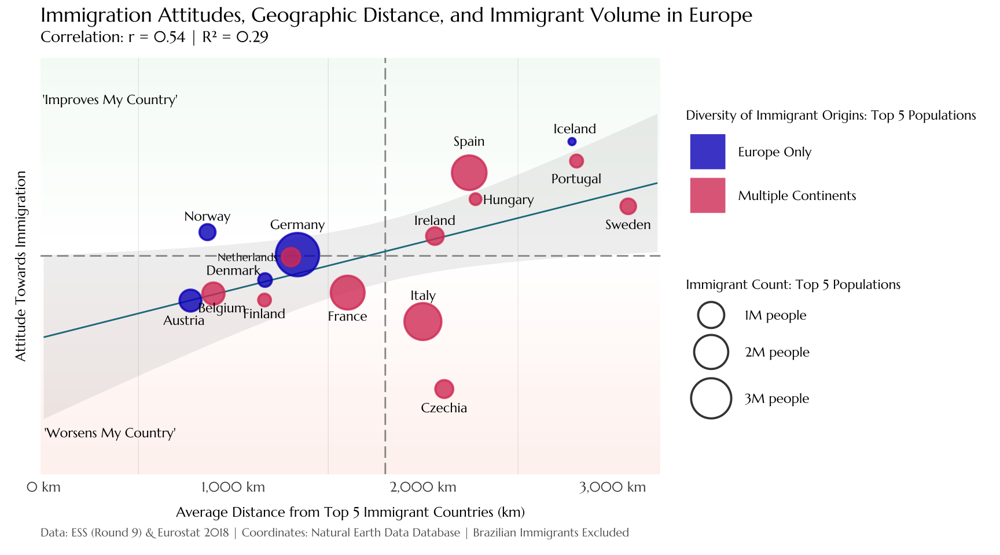

Introduction
This tutorial recreates and then re-imagines a circular bar chart visualization showing European countries’ attitudes toward immigration alongside their top 5 immigrant origin countries. The original graph, created by Reddit user killeradoom, combines 2018 data from the European Social Survey and Eurostat to present European immigration patterns.
Original Graph

The original visualization presents a double “layered” circular bar chart. The graphs inner circle show European countries sentiments towards immigrants, as depicted by a blue to red color scale (informed by European Social Survey data). The outer circle displays a bar chart representing the top 5 immigration populations residing in each country, with each bar colored according the immigrant origin countries’ continent. According to the original creator, it was made using Flourish. I chose this chart because, while aesthetically pleasing due to its mandala-like appearance, it is difficult to interpret due to it’s circular shape and doesn’t immediately reveal any interesting data trends.
Recreation
Libraries
Font Setup
The font “Oswald” was identified as the font most similar to the original graph by Google Fonts.
# Add Oswald font from Google Fonts
font_add_google("Oswald", "oswald")
showtext_auto()
showtext_opts(dpi = 300) # Matching the ggsave DPI settingData Preparation
ESS Data: Inner Circle Data
Information for the sentiment scale of immigrant recipient countries is informed by the European Social Survey (round 9, 2018). Because the original graph is from Reddit, I could not be sure how the original attitude scale was calculated. This was my best attempt at using the currently available data, including: selecting relevant variables, normalizing them, and finding each country level average.
Here, I will leave this un-run code to transparently show how I cleaned by data without having to attach the original large file.
# Load ESS attitude data
ess9 <- read_csv("ESS9e03_2.csv")
#including the larger file to explain my data cleaning process
# I am using all survey questions regarding immigration and the design weight variable
ess_attitudes_original <- ess9 |>
select(
cntry, #Country
dweight, # Design weight
# Is/Does immigration....
imbgeco, # good for economy? (1-10)
imwbcnt, # country a better/worse place to live? (1 = worse, 10 = better)
imueclt, # enrich cultural life? (1-10)
#...next questions are on different scale and will be reversed!
#1 = most positive towards immigration
#Our country should...
imsmetn, # Allow same ethnic group (1-4)
imdfetn, # Allow different ethnic group (1-4)
impcntr # Allow from poorer countries (1-4)
)
# Now, reverse scale for last 3 questions where higher score = more positive
ess_attitudes_rev <- ess_attitudes_original |>
mutate(
imsmetn_rev = 5 - imsmetn,
imdfetn_rev = 5 - imdfetn,
impcntr_rev = 5 - impcntr
)
# calculate country-level average attitudes
country_attitudes <- ess_attitudes_rev |>
rowwise() |>
mutate(
# normalize each question on a 0-1 scale
imbgeco_norm = imbgeco / 10,
imwbcnt_norm = imwbcnt / 10,
imueclt_norm = imueclt / 10,
imsmetn_norm = (imsmetn_rev - 1) / 3,
imdfetn_norm = (imdfetn_rev - 1) / 3,
impcntr_norm = (impcntr_rev - 1) / 3,
# average all 6 normalized values across individual respondents
person_avg = mean(c(imbgeco_norm, imwbcnt_norm, imueclt_norm,
imsmetn_norm, imdfetn_norm, impcntr_norm),
na.rm = TRUE)
) |>
ungroup() |>
group_by(cntry) |>
summarise( #creating average respondent attitude per receiving COUNTRY
# WEIGHTED mean using dweight
avg_attitude = sum(person_avg * dweight, na.rm = TRUE) / sum(dweight, na.rm = TRUE)
) |>
mutate(
attitude_normalized = (avg_attitude - min(avg_attitude)) /
(max(avg_attitude) - min(avg_attitude))
)
#write_csv(country_attitudes, "country_attitudes_clean.csv")The result of this cleaning is what will be used for the recreation. Here,the clean data is loaded to start the recreation process.
country_attitudes <- read_csv("country_attitudes_clean.csv")Eurostat: Outer Circle Data
The data for the outer circle of the graph comes from Eurostat (2018). This data shows the top 5 immigrant populations in each recipient country, and their makeup as a percentage of the total immigrant population. This was much more straight forward than the ESS attitude calculation. Here, I merged the csv with the ESS data, added their full names corresponding to their country codes for labeling, and created a function to classify each country by continent which will later determine the color of each bar.
# load Eurostat immigration data
immigration_data <- read_csv("top5_citizenship_by_country.csv")
# merge data sets to a combined data set, reference column = the receiving country (inner circle)
combined_data <- immigration_data |>
left_join(country_attitudes, by = c("destination_country" = "cntry")) |>
drop_na() #not all countries represented
# adds the full receiving country names - so they can later appear as labels
combined_data <- combined_data |>
mutate(
full_name = case_when(
destination_country == "AT" ~ "Austria",
destination_country == "BE" ~ "Belgium",
destination_country == "CZ" ~ "Czechia",
destination_country == "DE" ~ "Germany",
destination_country == "DK" ~ "Denmark",
destination_country == "ES" ~ "Spain",
destination_country == "FI" ~ "Finland",
destination_country == "FR" ~ "France",
destination_country == "HU" ~ "Hungary",
destination_country == "IE" ~ "Ireland",
destination_country == "IS" ~ "Iceland",
destination_country == "IT" ~ "Italy",
destination_country == "NL" ~ "Netherlands",
destination_country == "NO" ~ "Norway",
destination_country == "PT" ~ "Portugal",
destination_country == "SE" ~ "Sweden",
TRUE ~ destination_country
)
)
# next, classify origin countries by continent for coloring
# create a function to sort them also using case_when
classify_continent <- function(code) {
europe <- c("AL", "BA", "DE", "DK", "EE", "FI", "FR", "HR", "IT",
"LT", "LV", "NL", "PL", "PT", "RO", "RS", "SE", "SK",
"TR", "UA", "UK")
africa <- c("CV", "DZ", "ER", "MA", "SO")
asia <- c("AF", "CN", "IN", "IQ", "RU", "VN")
s_america <- c("BR")
case_when(
code %in% europe ~ "Europe",
code %in% africa ~ "Africa",
code %in% asia ~ "Asia",
code %in% s_america ~ "South America",
TRUE ~ "Other"
)
}
#finally, add to the combined_data
combined_data <- combined_data |>
mutate(continent = classify_continent(citizenship))Ordering Data
The next step after compiling a complete data frame was ordering the data of the inner circle by their attitudes. To inform this section, I followed tutorial 297 “Ordering Data” from the Data to Viz website’s section on circular bar charts.
#new element with countries ordered by their attitudes
#includes also the countries' full names
country_order <- combined_data |>
distinct(destination_country, avg_attitude, attitude_normalized, full_name) |>
arrange(desc(attitude_normalized)) |> # order by attitude in DESCENDING order
mutate(country_id = row_number()) # assign each receiving country an ID for easy coding by order
# join country ID back to main data
# left join to bring the order back into our combined data
# joined by receiving country
combined_data <- combined_data |>
left_join(country_order |> select(destination_country, country_id),
by = "destination_country")
# from tutorial 297
# arranging each immigrant citizenship by percentage of immigrant population
# done WITHIN receiving country that are ordered (desc) by attitude
combined_data <- combined_data |>
arrange(country_id, desc(percentage))Graph Element Preparation
Gaps Between Bars
Next, I had to assign each country a unique x position. This section was also informed by tutorial 297 “Add a Gap” from the Data to Viz R Graph Gallery. It’s vital that each bar has it’s exact position and unique sequential ID. Also, empty gaps are created to give space between bars when mapping. This section begins the creation of the final data frame used to plot the recreation, called “data”.
# Assign unique ID to each bar
# This gives, "Each bar... a unique x position" (tutorial 297)
data <- combined_data |>
mutate(
id = row_number() # sequential ID
)
# calculate empty bars between groups
# "Data to viz" suggests adding empty rows to create gaps
empty_bar <- 2.5 # number of empty positions between groups indicates the size of each gap
data <- data |>
mutate(
# from tutorial 297: we create spacing through position calculation
bar_position = id * (1 + empty_bar)
)Labels: Positions and Angles
This section codes for the unique angels of all the country names in the original graph. Each lies on a radial line coming from the center point and extending outwards. Tutorial 296 from the Data to Viz circular bar plot section informed this section: that each label must be calculated and it starts with computing it’s specific angle. This tutorial also provided me a specific formula for calculating angles in circular bar plots. Here, I also added the full names of each immigrant origin country.
# calculate center position for each destination country "group"
country_positions <- data |>
group_by(destination_country, country_id, full_name) |>
summarise(
center_position = mean(bar_position), # Average position of group
.groups = "drop"
) |>
left_join(country_order |> select(destination_country, attitude_normalized),
by = "destination_country")
# calculate the unique "number" (refers to row) of each bar in our data
number_of_bar <- nrow(country_positions)
# angle formula from tutorial 296:
# "angle <- 90 - 360 * (label_data$id-0.5) / TOTAL positions
# "we subtract 0.5 because the letter must have the angle of the center of the bars"
country_positions <- country_positions |>
mutate(
# calculate angle based on actual position in the full circle
total_positions = max(data$bar_position),
base_angle = 90 - 360 * (center_position - 0.5) / total_positions,
angle = case_when(
base_angle < -90 | base_angle > 90 ~ base_angle + 180,
TRUE ~ base_angle
),
hjust_receiving = case_when(
base_angle < -90 | base_angle > 90 ~ 1,
TRUE ~ 0
)
)
# adds center_position to main data for connecting lines
data <- data |>
left_join(country_positions |> select(destination_country, center_position),
by = "destination_country")
# calculate angles for individual bars
data <- data |>
mutate(
base_bar_angle = 90 - 360 * (bar_position - 0.5) / max(bar_position),
bar_angle = case_when(
base_bar_angle < -90 | base_bar_angle > 90 ~ base_bar_angle + 180,
TRUE ~ base_bar_angle
),
hjust_bar = case_when(
base_bar_angle < -90 | base_bar_angle > 90 ~ 1,
TRUE ~ 0
)
)
# also adding origin country full names
origin_country_names <- c(
"AL" = "Albania",
"BA" = "Bosnia",
"DE" = "Germany",
"DK" = "Denmark",
"EE" = "Estonia",
"FI" = "Finland",
"FR" = "France",
"HR" = "Croatia",
"IT" = "Italy",
"LT" = "Lithuania",
"LV" = "Latvia",
"NL" = "Netherlands",
"PL" = "Poland",
"PT" = "Portugal",
"RO" = "Romania",
"RS" = "Serbia",
"SE" = "Sweden",
"SK" = "Slovakia",
"TR" = "Turkey",
"UA" = "Ukraine",
"UK" = "UK",
"CV" = "Cape Verde",
"DZ" = "Algeria",
"ER" = "Eritrea",
"MA" = "Morocco",
"SO" = "Somalia",
"AF" = "Afghanistan",
"CN" = "China",
"IN" = "India",
"IQ" = "Iraq",
"RU" = "Russia",
"VN" = "Vietnam",
"BR" = "Brazil"
)
#adding origin country full names to data
data <- data |>
mutate(origin_full_name = origin_country_names[citizenship])Gradient Colors
The next step is to define the colors for the “attitude-scale”, which informs the colors of the inner circle country labels as well as the corresponding dots. The color codes used are taken directly from original image with a color picker.
# uses scale_fill_gradient2()
# label colors for receiving country labels only
pal <- gradient_n_pal(c("#be0e01", "#810180", "#0e00c3"),
values = c(0, 0.5, 1))
country_positions <- country_positions |>
mutate(
# Rescale for label colors only
rescaled = (attitude_normalized - min(attitude_normalized)) /
(max(attitude_normalized) - min(attitude_normalized)),
label_color = pal(rescaled)
)Building the Plot
Now with all our data and elements fully prepared, we can start the process of recreating the visual graph.
Coord_polar
The first step is to utilize the coord_polar function. This step follows tutorial 295. Essentially, the plot is created the same as a standard bar chart, and the function is used to wrap the chart into a circle.
p <- ggplot() +
## coord_polar() to make the chart circular
coord_polar(theta = "x", start = 0) +
# set axis limits
# tutorial 295: states the importance of the ylim() argument
#if ylim starts at 0 then the bars start at the center of the circle, ours need to be large
scale_x_continuous(expand = c(0, 0)) +
scale_y_continuous(limits = c(-50, 220), expand = c(0, 0)) # this is my limit to show all elements of graph Stylistic Elements
Here we graph the central dot of the “mandala” shape, the attitude dots which are colored according to the countries attitudes towards immigration, and the radial lines from the center (including those from the center and those from the receiving countries to their corresponding immigration bars).
# 1: center dot
p <- p +
geom_point(aes(x = 0, y = -50), size = 2, color = "black") +
# 2: radial lines from center
# these go from central dot to the attitude dots
geom_segment(data = country_positions,
aes(x = center_position, xend = center_position,
y = -50, yend = 50),
color = "black", linewidth = 0.6) +
# 3a: singular lines extending from attitude dots to our "split point"
geom_segment(data = country_positions,
aes(x = center_position, xend = center_position,
y = 50, yend = 75),
color = "black", linewidth = 0.6) +
# 3b: lines from determined "split point" connecting to the outer bars
geom_segment(data = data,
aes(x = center_position, xend = bar_position,
y = 60, yend = 130), #starting at "split point", ending at base of bars
color = "black", linewidth = 0.4) +
# 4: attitude dots with gradient colors
# using attitude_normalized directly with scale_fill_gradient2
geom_point(data = country_positions,
aes(x = center_position, y = 40, #position on radial lines
fill = attitude_normalized),
size = 4, shape = 21, stroke = 0) +
# fill scale for attitude dots
#these are mapped here at the end so that they sit on TOP of the lines!
scale_fill_gradient2(
low = "#be0e01",
mid = "#810180",
high = "#0e01c2",
midpoint = median(country_positions$attitude_normalized),
# Re-scale to use full color range
limits = range(country_positions$attitude_normalized), #to show variety in color!
guide = "none"
) Recieving Country Labels
This section maps the inner ring country labels. It also uses the shadow text function to create the labels with a white outline for increased legibility.
# 5: receiving country labels (gradient colored)
p <- p +
geom_shadowtext(data = country_positions, #shadowtext package for white outline
aes(x = center_position, y = 50,
label = full_name,
color = label_color,
angle = angle,
hjust = hjust_receiving),
size = 2.75,
fontface = "bold",
bg.colour = "white", # white outline color
bg.r = 0.15, # outline thickness
family = "oswald") + # same font as rest of graph
scale_color_identity() + # to use the gradient color scale
new_scale_color() # to reset for next color scale Outer Barchart
This section maps the outer ringer of bar charts. It originally drew from tutorial 295 and tutorial 297 which teach the use of geom_bar or geom_col for the creation of circular bar charts. However, I needed to use geom_segment to avoid the “coning” effect that is unavoidable when using geom_bar or geom_col. Instead of using geom_bar with stat=“identity”, which is recommended in the tutorial, I used geom_segment to have precise control over bar positioning.
# 6: bar charts
p <- p +
geom_segment(data = data, #segment instead of bar/col
aes(x = bar_position,
xend = bar_position,
y = 130,
yend = 130 + (percentage * 1.7), #"bar" length
color = continent), #colored by continent
linewidth = 5,
lineend = "butt") + #this create a flat and straight end to the "bars"
#continent color categories
scale_color_manual( #colors taken from original graph with color picker
values = c(
"Europe" = "#010f7a",
"Africa" = "#da7100",
"Asia" = "#700004",
"South America" = "#015e1a"
),
name = ""
) Barchart Labels
This section creates the labels for the outer ring, which extend from the end of each bar chart. This involves using tools from tutorial 296 “labels with angle aesthetics”. These labels must have both the country labels and also their percentage of the total immigrant population.
# 8: origin country labels on bars
p <- p +
geom_text(data = data,
aes(x = bar_position,
y = 130 + (percentage * 1.7) + 5,
label = glue("{round(percentage, 1)}% {origin_full_name}"), #adds in percentage
color = continent, # colored by the continent
angle = bar_angle, # on same radial angle as the corresponding bar
hjust = hjust_bar),
size = 3, fontface = "bold") Theme and (Non)Titles
Here, I set the theme of the graph and also set the groundwork for the titles. The font is Oswald taken from Google Fonts. The title and subtitles are added in the next section to ensure the legends fall below the titles but above the graph.
#9: theme
p <- p +
theme_void() + #all white background
theme(
plot.title = element_markdown(size = 26, hjust = 0.5,
margin = margin(t = 5, b = 1),
family = "oswald"),
plot.subtitle = element_markdown(size = 18, hjust = 0.5,
margin = margin(t = 1, b = 10),
family = "oswald"),
text = element_text(family = "oswald"),
legend.position = "none",
plot.margin = margin(t = 10, r = 0, b = 0, l = 0)
) +
labs(
#right now we leave these null!
#to make sure the legends appear under the title, we will use patchwork later
title = NULL,
subtitle = NULL
)Legends
Here, patchwork is used to create the two distinct legends (1 for continent classification and 1 for attitude scale). Also, using patchwork ensures the legends are accurately placed under the title and subtitle. After creating the legends,they are joined together before combining into the main plot. Finally, the title and subtitle are added as well.
#10: legends
# legend 1: attitude gradient scale
legend1_data <- data.frame(x = rep(1:50, each = 3), y = rep(1:3, times = 50)) #1:50 determining length being about half of plot width, and repeating y for thickness
legend1 <- ggplot(legend1_data, aes(x = x, y = y, fill = x)) +
geom_tile() +
scale_fill_gradient2(low = "#be0e01", mid = "#810180", high = "#0e01c2",
midpoint = 25) +
annotate("text", x = 1, y = -0.2, label = "Worsens my\ncountry", #\n to create unique break
#x sets position of text under the legend
hjust = 0, vjust = 1, size = 2.8, family = "oswald") +
annotate("text", x = 25, y = -0.3, label = "Neutral",
hjust = 0.5, vjust = 1, size = 2.8, family = "oswald") +
annotate("text", x = 50, y = -0.3, label = "Improves my\ncountry",
hjust = 1, vjust = 1, size = 2.8, family = "oswald") +
coord_cartesian(ylim = c(-1.5, 4), clip = "off") + # extend y-axis to show labels below
theme_void() +
theme(legend.position = "none",
plot.margin = margin(0, 0, 0, 0)) #trying to make 0 for scaling
# legend 2: continent category with colors
legend2_data <- data.frame(
continent = c("Europe", "Africa", "Asia", "South America"),
color = c("#010f7a", "#da7100", "#700004", "#015e1a"),
x = c(1, 3, 5, 7), # spread to fit labels between squares
y = 1
)
legend2 <- ggplot(
legend2_data, aes(x = x, y = y, fill = continent)) +
geom_tile(
width = 0.8, height = 0.8, color = "black", linewidth = 0.3) + # width = height to create squares
geom_text(aes(x = x + 0.5, y = y, label = paste("-", continent)), #"-" is also added before each continent name
hjust = 0, vjust = 0.5, size = 2.8, family = "oswald") + # labels to the right of the squares
scale_fill_manual(values = c("Europe" = "#010f7a", "Africa" = "#da7100",
"Asia" = "#700004", "South America" = "#015e1a")) +
#filled according to continent
coord_cartesian(xlim = c(0.5, 9.5), ylim = c(0.5, 1.5)) +
theme_void() +
theme(legend.position = "none",
plot.margin = margin(0, 0, 0, 0)) #trying to make 0 for scaling
# combine legends side by side before combining to main plot
legends <- legend1 + legend2 + plot_layout(widths = c(1.25, 1))
# combine legends to the main plot
final_plot <- legends / p +
plot_layout(heights = c(0.5, 10)) +
plot_annotation(
title = "**Where do most immigrants of these European countries originate from?**",
subtitle = "Arranged by their citizens' feelings towards immigrants, together with the top 5 countries of origin",
theme = theme(
plot.title = element_markdown(size = 19, hjust = 0.5,
margin = margin(t = 5, b = 1),
family = "oswald"),
plot.subtitle = element_markdown(size = 14, hjust = 0.5,
margin = margin(t = 1, b = 10),
family = "oswald")
)
)Final Recreation
Here, we print to see our final product.
# 11: display plot
print(final_plot)
Improvement
Improvement Introduction
While visually pleasing, the original graph doesn’t immediately reveal any interesting trends in the data. Therefore, for my improvement, I decided to make a scatter plot that more clearly shows a hidden trend in the data: a relationship between attitudes towards immigration and geographical distance. I utilized the previous elements of content classification and immigrants origins, but I made changes to the way we see them. My goals was to tell a more interesting story with the data.
First, I calculated the immigrants average distance to their home country from their new country of residence, using the coordinates of capital cities. This average distance is displayed on the X-axis. The Y axis still demonstrates the sentiment scores of recipients countries, from most negative being (at 0) to most positive. I also created a color classification, that divides immigrant destination countries into a simplified two categories: one receiving their top 5 immigration populations only from other European countries, and the other receiving immigrants from multiple continents.
It’s important to note that my final model found an R correlation of only 0.54. For some fields this might be considered not as impressive, but I found it higher than expected as a single variable predictor in the social sciences. Furthermore, it is extremely difficult to predict something as nuanced as a “sentiment”.
There are many limitations to the model explained more thoroughly throughout this tutorial, including: the use of capital cities as approximations for distance calculations, and the exclusion of Brazilian immigrants living in Portugal.
Libraries
The first step of the improvement is to load the new needed libraries. This includes the rnaturalearth and geosphere packages which will be used to calculate the average distances between destination countries and immigrants home countries.
Graph Preparation
Font Set-up
I decided to use a different font for my recreation. Because the new graph will be a regression model, my goal was to chose an academic looking font that is easy to read. I chose to us “Marcellus” from Google_fonts.
font_add_google("Marcellus", "marcellus")
showtext_auto()
showtext_opts(dpi = 300)Coordinates from Natural Earth Database
Next, the coordinates of capital cities for each receiving country and immigrant origin country are found using Natural Earth, which is a free map database. Coordinates of capital cities are used for approximation. It is important to not that GB is representing the UK in the Natural Earth database.
#download a data set of all populated places (cities) in the world from natural earth, saved as "cities"
cities <- ne_download(scale = 110, type = 'populated_places',
category = 'cultural', returnclass = 'sf')
capitals_raw <- cities |> #this filters for capital cities
filter(FEATURECLA == "Admin-0 capital") |>
st_drop_geometry() |>
select(NAME, ISO_A2, LATITUDE, LONGITUDE) # this selects the relevant variables.
needed_countries <- c( #selecting the countries I need from my original data set
"AT", "BE", "CZ", "DE", "DK", "ES",
"FI", "FR", "HU", "IE", "IS", "IT",
"NL", "NO", "PT", "SE","AL", "BA",
"EE", "HR", "LT", "LV", "PL", "RO",
"RS", "SK", "TR", "UA", "GB", #GB = UK in this package
"CV", "DZ", "ER", "MA", "SO", "AF",
"CN", "IN", "IQ", "RU", "VN", "BR"
)
country_coords <- capitals_raw |> # keeps the capital cities from the countries above
filter(ISO_A2 %in% needed_countries) |>
mutate(
country_code = ISO_A2,
lat = LATITUDE,
lon = LONGITUDE,
capital_name = NAME
) |>
select(country_code, capital_name, lat, lon) |>
as.data.frame()
if("GB" %in% country_coords$country_code) { #coding for UK instead of GB
country_coords <- country_coords |>
mutate(country_code = if_else(country_code == "GB", "UK", country_code))
}Calculating New Metrics
This section uses distHaversine and coordinates from capital cities to calculate the distances between each immigrant origin country and it’s corresponding destination. Then, it calculates the average distance “home” for immigrants in the top 5 most common immigrant populations for each of our destination countries. Furthermore, it calculates other important variables such as max and min distance, the percentage of immigrants from Europe vs not from Europe in each receiving country, as well as the absolute count of immigrants within the top 5 immigrant populations for each country. This final metric will be important for determining the size of our dots. Essentially, this section calculates the summary statistics of my data. It’s important to note that I made the conscious chose to exclude Brazilian immigrants in Portugal from the data. This was due to the fact it was the only South American country represented in the data, and the fact that these two cultures share a common native language. I was concerned it would have a significant effect on our findings.
# population volume and continent diversity classification
destination_metrics <- combined_data |>
left_join(#this matches each DESTINATION country with it's capital
country_coords, by = c("destination_country" = "country_code")) |>
rename(
dest_lat = lat, dest_lon = lon, dest_capital = capital_name) |> #renames columns
left_join(#matches IMMIGRANTS country with coordinates of capital cities
country_coords, by = c("citizenship" = "country_code")) |>
rename(
origin_lat = lat, origin_lon = lon, origin_capital = capital_name) |> #renames columns
rowwise() |>
mutate( #calculates the distance between each immigrant origin and it's destination country
distance_km = distHaversine(
c(dest_lon, dest_lat),
c(origin_lon, origin_lat)
) / 1000
) |>
ungroup() |>
filter(citizenship != "BR") |> #filters out Brazilian immigrants
group_by(destination_country, avg_attitude) |>
summarise( #calculating...
avg_distance = weighted.mean(distance_km, w = percentage, na.rm = TRUE), #avg distance
max_distance = max(distance_km, na.rm = TRUE), #max distance
min_distance = min(distance_km, na.rm = TRUE), #min distance
num_continents = n_distinct(continent), #how many distinct continents in each country's top 5 immigrant pops
pct_europe = sum(percentage[continent == "Europe"], na.rm = TRUE), #percentage top 5 immigrants from Europe
pct_non_europe = 100 - pct_europe, #percentage top 5 immigrants NOT from Europe
top5_population_total = sum(population, na.rm = TRUE), #sum of top 5 immigrant pops
.groups = "drop"
)
destination_metrics <- destination_metrics |>
mutate(
full_name = case_when( #converting country codes to full names
destination_country == "AT" ~ "Austria",
destination_country == "BE" ~ "Belgium",
destination_country == "CZ" ~ "Czechia",
destination_country == "DE" ~ "Germany",
destination_country == "DK" ~ "Denmark",
destination_country == "ES" ~ "Spain",
destination_country == "FI" ~ "Finland",
destination_country == "FR" ~ "France",
destination_country == "HU" ~ "Hungary",
destination_country == "IE" ~ "Ireland",
destination_country == "IS" ~ "Iceland",
destination_country == "IT" ~ "Italy",
destination_country == "NL" ~ "Netherlands",
destination_country == "NO" ~ "Norway",
destination_country == "PT" ~ "Portugal",
destination_country == "SE" ~ "Sweden",
TRUE ~ destination_country
), #countries labeled as either "Europe Only" or "Multiple Continents"
diversity_type = if_else(num_continents == 1, "Europe Only", "Multiple Continents")
) #this determines whether their top 5 immigrant pops come all come from europe or not. Correlation Code
This code calculates the correlation coefficient between the two variables of interest: the attitude of countries towards immigration and the average distance between immigrants home country and their destination country. It leaves us with 0.54, meaning that countries with more distant immigrant populations tend to have more positive attitudes toward immigration.
cor_avg_distance <- cor(destination_metrics$avg_attitude,
destination_metrics$avg_distance,
use = "complete.obs") # we will only use rows with both variables availableBuilding Scatterplot
Background Grid Gradient
This section calculates the range for the x and y axis so that the background grid can be appropriately graphed and filled with a gradient color reflecting sentiments towards immigrants ( reflecting the measurement scale on the y axis)
# defines the plot ranges for ...
attitude_range <- range(destination_metrics$avg_attitude) #y axis
distance_range <- range(destination_metrics$avg_distance) #x axis
background_grid <- expand.grid(
# x axis: starts at 0 km and extend slightly past the max distance
avg_distance = seq(0, distance_range[2] * 1.05, length.out = 100),
# y axis: covers the entire normalized attitude range from 0 to 1
avg_attitude = seq(0, 1, length.out = 200)
)Principle Elements
This section builds the principle elements of the plot. This includes it’s axis, it’s gradient background, quadrant lines, the regression line and the points which have their size reflecting the total immigrant population count (in the top 5 immigrant populations).
plot_distance <- ggplot(destination_metrics, # our data
aes(x = avg_distance, y = avg_attitude)) +
# sets up the x and y axis
# 1: creates small tiles that cover the entire background with the gradient based on avg_attitude
geom_tile(data = background_grid,
aes(x = avg_distance, y = avg_attitude, fill = avg_attitude),
alpha = 0.15) + #alpha sets transparency
# 2: defines the fill scale for the background gradient with scale_fill_gradient2
scale_fill_gradient2(
low = "#be0e01", # most negative attitudes
mid = "white", # neutral attitude
high = "#27AE60", # most positive attitudes
midpoint = median(destination_metrics$avg_attitude),
guide = "none" # indicates for no legend to be included
) +
# 3: resets new_scale_color() to change colors for lines and points
ggnewscale::new_scale_color() +
# 4: divides graph into quadrants
geom_hline(yintercept = median(destination_metrics$avg_attitude), #horizontal line
linetype = "longdash", color = "grey40", alpha = 0.7) +
geom_vline(xintercept = median(destination_metrics$avg_distance), #vertical line
linetype = "longdash", color = "grey40", alpha = 0.7)
### adding the regression line and points
plot_distance <- plot_distance +
# 5: adds the linear model line
geom_smooth(method = "lm",
color = "#1F7A8C",
linewidth = 0.5,
alpha = 0.15,
fullrange = TRUE) + # stretches to cover whole graph
# 6: adds the points
geom_point(aes(size = top5_population_total, # dots relative to pop size
color = diversity_type),
alpha = 0.8,
stroke = 1)Attitude and Country Label Annotations
This step adds individual annotations to indicate more clearly the attitude gradient on the y axis. It also individually adds the country annotation labels to give the graph a cleaner look and ensure more accurate placement, especially for dots which lie close together.
plot_distance <- plot_distance +
# adds "Negative Attitude" label
annotate("text", x = 350, y = 0.45, label = "'Worsens My Country'",
size = 3, fontface = "bold", family = "marcellus") +
# adds "Positive Attitude" label
annotate("text", x = 350, y = 0.85, label = "'Improves My Country'",
size = 3, fontface = "bold", family = "marcellus") +
# adds country labels
annotate("text", x = 740, y = 0.585, label = "Austria",
size = 3, fontface = "bold", family = "marcellus") +
annotate("text", x = 940, y = 0.6, label = "Belgium",
size = 3, fontface = "bold", family = "marcellus") +
annotate("text", x = 2111, y = 0.48, label = "Czechia",
size = 3, fontface = "bold", family = "marcellus") +
annotate("text", x = 1000, y = 0.645, label = "Denmark",
size = 3, fontface = "bold", family = "marcellus") +
annotate("text", x = 1163 , y = 0.593, label = "Finland",
size = 3, fontface = "bold", family = "marcellus") +
annotate("text", x = 1602, y = 0.59, label = "France",
size = 3, fontface = "bold", family = "marcellus") +
annotate("text", x = 1338, y = 0.7, label = "Germany",
size = 3, fontface = "bold", family = "marcellus") +
annotate("text", x = 2450, y = 0.73, label = "Hungary",
size = 3, fontface = "bold", family = "marcellus") +
annotate("text", x = 2800, y = 0.815, label = "Iceland",
size = 3, fontface = "bold", family = "marcellus") +
annotate("text", x = 2062, y = 0.705, label = "Ireland",
size = 3, fontface = "bold", family = "marcellus") +
annotate("text", x = 2000, y = 0.615, label = "Italy",
size = 3, fontface = "bold", family = "marcellus") +
annotate("text", x = 1075 , y = 0.6607, label = "Netherlands",
size = 2.5, fontface = "bold", family = "marcellus") +
annotate("text", x = 863 , y = 0.71, label = "Norway",
size = 3, fontface = "bold", family = "marcellus") +
annotate("text", x = 2808 , y = 0.755, label = "Portugal",
size = 3, fontface = "bold", family = "marcellus") +
annotate("text", x = 2243 , y = 0.8, label = "Spain",
size = 3, fontface = "bold", family = "marcellus") +
annotate("text", x = 3081 , y = 0.70, label = "Sweden",
size = 3, fontface = "bold", family = "marcellus")Scaling and Legends Customization
Here, the legend and coloring of the points are created. These colors are based on their continent classification according the continent of origins of the immigrant populations. The size of the dots represent the country’s top 5 immigrant population size. The stylistic choice was made to remove the Y axis labeling details.
# continent diversity coloring
plot_distance <- plot_distance +
scale_color_manual(
values = c("Multiple Continents" = "#DA4167", "Europe Only"= "#0e00c3"),
name = "Diversity of Immigrant Origins: Top 5 Populations",
guide = guide_legend(override.aes = list(size = 10, shape = 15)) #overrides to create big legend, also using a square (as indicates in shape)
)
# dot size scale for population volume
plot_distance <- plot_distance +
scale_size_continuous(range = c(1.5, 12.5), # controls dot size scale
name = "Immigrant Count: Top 5 Populations", # legend title
labels = label_number(big.mark = ",", suffix = " people", scale_cut = cut_short_scale()), # adds commas, adds "people", uses abbrevs.
guide = guide_legend(override.aes = list(shape = 1, fill = NA, color = "black"))) + # only black outline
scale_x_continuous(labels = comma_format(suffix = " km")) # creates x axis formats for labels
# removes y-axis details
plot_distance <- plot_distance +
scale_y_continuous(
breaks = NULL # remove all Y axis labels - already added as annotations
)Theme
This section applies the minimal theme, as well as a few customizations of the sizes, spaces, and colors for all text elements of the graph.
plot_distance <- plot_distance +
theme_minimal() +
theme(
# global font
text = element_text(family = "marcellus"),
# titles
plot.title = element_text(size = 13, face = "bold", hjust = 0, margin = margin(b = 2.5)),
plot.subtitle = element_text(size = 10, hjust = 0, margin = margin(b = 7.5)),
plot.caption = element_text(size = 7.5, hjust = 0, color = "grey40", margin = margin(t = 5)),
# axes
axis.title = element_text(size = 9, face = "bold"),
axis.title.x = element_text(margin = margin(t = 7.5)),
axis.title.y = element_text(margin = margin(r = 7.5)),
axis.text = element_text(size = 9),
# legends
legend.position = "right",
legend.title = element_text(size = 8.5, face = "bold"),
legend.text = element_text(size = 8.5),
legend.spacing.y = unit(1, "cm"),
legend.key.size = unit(0.6, "cm"),
# grid and background
panel.grid.major.x = element_blank(),
panel.grid.major.y = element_line(color = "grey80", linetype = "dotted"),
plot.margin = margin(5, 10, 10, 10),
plot.background = element_rect(fill = "white", color = NA)
)Titles
This section specifies our titles and graph labels.
plot_distance <- plot_distance +
labs(
title = "Immigration Attitudes, Geographic Distance, and Immigrant Volume in Europe",
subtitle = sprintf("Correlation: r = %.2f | R² = %.2f", cor_avg_distance, cor_avg_distance^2),
x = "Average Distance from Top 5 Immigrant Countries (km)",
y = "Attitude Towards Immigration",
caption = "Data: ESS (Round 9) & Eurostat 2018 | Coordinates: Natural Earth Data Database | Brazilian Immigrants Excluded"
)Visible Plotting Window
This section solidifies the visual plotting window, or what can be seen after the code is run.
plot_distance <- plot_distance +
# Use coord_cartesian to control the visible region
coord_cartesian( #zooms our view
ylim = c(0.4, 0.9), #limits of attitude scale shown in plot
expand = FALSE)Final Improvement Plot
Here, we print the final product.
print(plot_distance)
Final Notes
The found correlation in the improvement could be due to many reasons. For example, a selection effect. This could mean that immigrants who travel further distances may be more highly motivated or skilled, which could lead to more positive perceptions. Another possibility is geographical tensions. This would suggest that countries that are closer geographically might have historical tensions that influence immigration tolerance. Finally, economic factors could influence immigration patterns, as countries that attract long-distance immigrants might have stronger economies that make people feel more secure about immigration.
Despite the uncertainty about what causes the observed correlation, the improved graph accomplishes the goal of showing a more obvious trend in attitudes towards immigration in Europe. This project shows how visualization choices have a direct impact on how we understand data, and how R can be used as a tool to extract and examine trends that are not immediately visible.